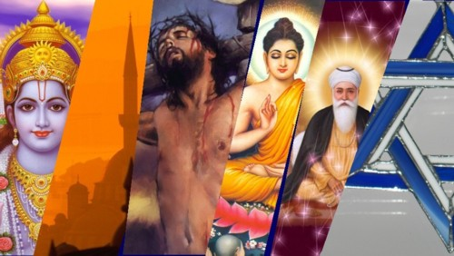

The traditional practices followed in Rajasthan can be traced through the Vedas and all the rituals have to be performed as per the process which is mentioned in the Vedas. All the customs have evolved from Rajasthani version of the Vedas which is followed by the priests and the gurus. The local residents of Rajasthan have firm belief in the Vedas and this is the reason that every ritual is performed in a traditional style from birth to death. There are total 16 Samskaras which relate to three important phases; birth, marriage and death. Well known for its rich customs and traditions, the tourists can get the glimpse as soon as they enter the boundaries of Rajasthan. It is a city of Maharajas, therefore you will get to explore the rituals and the ethnic culture which still exists even today. No matter which area to start with but the traditions can be found in every city of Rajasthan and this is the best part about the state. If you are looking forward to a fabulous experience, do not miss the adventure of exploring the interiors which are full of fun and take you back in the ancient times. You will come across some of the old traditions that were practiced by the Maharajas and the queens. It is definitely a wonderful experience to be a part of such old customs that take you to a different world. The state consists of all types of people including Hindu, Jains and Muslims. Despite of the diverse culture, the people live together and have a special bond with one another. Maa Durga is one of the most worshipped deities by the people together with other God and Goddess too. Religion
Most of the people living in Rajasthan are basically Hindu. There are a lot of myths when it comes to the origin of this religion within the state. Even today most of the people are very strict with their customs and follow it strongly. Their faith in the religion is very strong and deepens the roots of culture and rich traditions. The state is known for many heroes whose paintings are worshipped by the people. These small statues are either kept in the small temples under one of the trees or they are also worshipped near the wells. A few famous names of the hero are Baba Ramdeo, Pabuji, Mehaji, Harbhuji and Gogaji. The people of Rajasthan are also attracted towards the Aryan custom and worship nature as well. Every area is renowned for a particular deity who is worshipped with complete faith and enthusiasm. The important religious places of Rajasthan are Ajmer, Pushkar, Nathdwara and Deshnok. People turn out in large numbers and visit these destinations. Though most of the Hindus are Vaishnavites still other Goddess are also worshipped with the same faith and zeal. The worshippers not include the Hindus but even Jain’s and Muslims who love to be a part of such activities. The special Meena community believes in the Vedic form and worship Lord Shiva, Lord Krishna and Goddess Durga. On the other hand Rajputs used to worship Lord Vishnu, Lord Shiva, Goddess Durga and Sun. Even Gurjar community has their own customs and they worship God Devnarayan, Lord Vishnu, Goddess Bhavani, Sun and Lord Shiva.
Many people of Rajasthan follow Jainism and there are many beautiful temples located in Ranakpur, Jaisalmer, Chittaurgarh, Osian, Shree Mahaveerji and Mount Abu. The community which follows Jainism is Oswal and there are lots of people who are a part of it.
Ajmer is considered the finest Islamic destination known for Khwaja Moinuddin Chisti. The Atarki Dargah is the tomb of Hamiuddin Nagori and holds an important place in the Islamic culture. The Dargah is situated in Nagaur and forms the part of the Sunni caste. There are many people who have converted their religion and following the practices of their respective religion now. Even the communities are highly strict with their practices and ensure that followers abide by the rules and customs.
Even Dadupanthi is also a popular religion that many people follow and worship Dadu who is known to support the principles like equality of man, no alcohol, complete restraint and total vegetarianism.
There quite a few people who also follow Sikhism as well as Christianity. Other religions that you will come across are Buddhism as well as Parsi. In the recent times, there has been a sudden increase in the people of the Sikh community, thus making this state more colorful and lively.